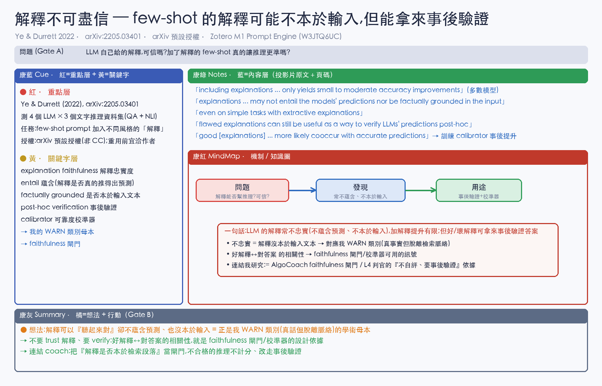
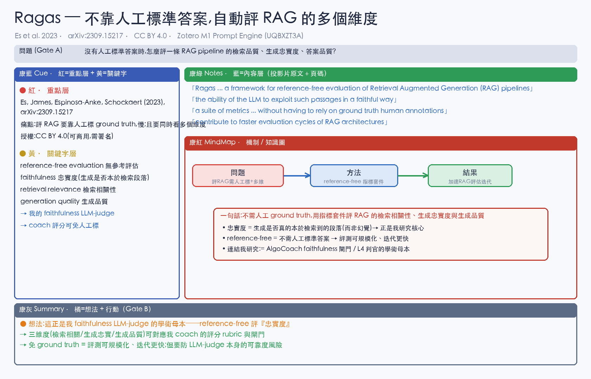
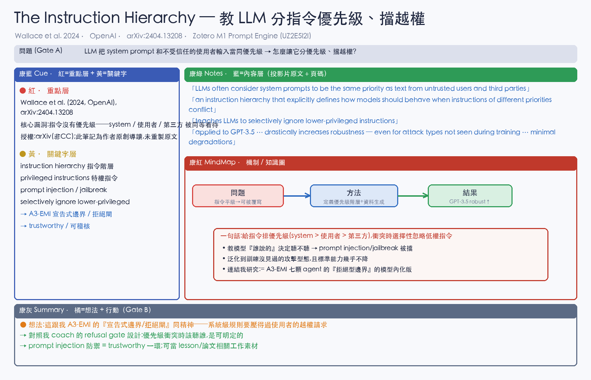
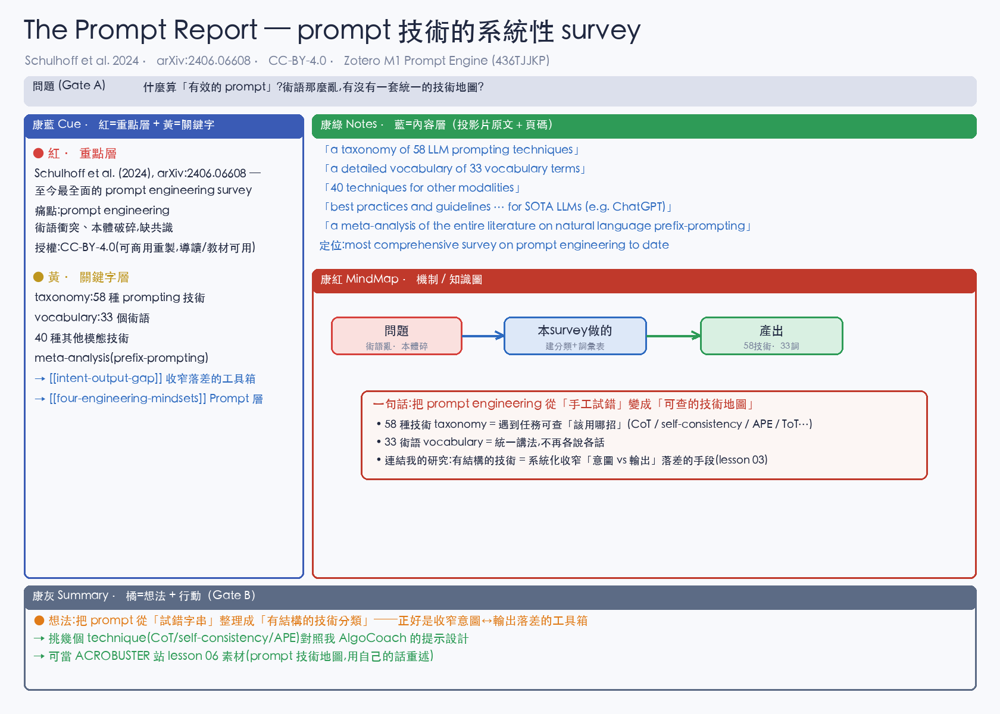

2026-11-15
解釋不可盡信 — few-shot 的解釋可能不本於輸入，但能拿來事後驗證The Unreliability of Explanations in Few-shot Prompting for Textual Reasoning
出處 Source：Ye & Durrett 2022 · arXiv:2205.03401 · arXiv 預設授權
核心問題 · Question
LLM 自己給的解釋，可信嗎？加了解釋的 few-shot 真的讓推理更準嗎？
🔴 背景與痛點 · Red
- Ye & Durrett (2022)，arXiv:2205.03401
- 測 4 個 LLM × 3 個文字推理資料集（QA + NLI）
- 任務：few-shot prompt 加入不同風格的「解釋」
- 授權：arXiv 預設授權（非 CC）；重用前宜洽作者
🟡 概念 · Yellow
- explanation faithfulness 解釋忠實度
- entail 蘊含（解釋是否真的推得出預測）
- factually grounded 是否本於輸入文本
- post-hoc verification 事後驗證
- calibrator 可靠度校準器
- → 我的 WARN 類別母本
- → faithfulness 閘門
🔵 原文依據 · Blue (quotes)
「including explanations … only yields small to moderate accuracy improvements」（多數模型）
「explanations … may not entail the models' predictions nor be factually grounded in the input」
「even on simple tasks with extractive explanations」
「flawed explanations can still be useful as a way to verify LLMs' predictions post-hoc」
「good [explanations] … more likely cooccur with accurate predictions」→ 訓練 calibrator 事後提升
🟠 我的想法 · Takeaway
- 想法：解釋可以「聽起來對」卻不蘊含預測、也沒本於輸入 = 正是我 WARN 類別（真話但脫離脈絡）的學術母本
- → 不要 trust 解釋、要 verify：好解釋↔對答案的相關性，就是 faithfulness 閘門／校準器的設計依據
- → 連結 coach：把「解釋是否本於檢索段落」當閘門，不合格的推理不計分、改走事後驗證
原卡圖 Card image

2026-11-14
Ragas — 不靠人工標準答案，自動評 RAG 的多個維度Ragas — reference-free automated evaluation of RAG pipelines
出處 Source：Es et al. 2023 · arXiv:2309.15217 · CC-BY-4.0
核心問題 · Question
沒有人工標準答案時，怎麼評一條 RAG pipeline 的檢索品質、生成忠實度、答案品質？
🔴 背景與痛點 · Red
- Es, James, Espinosa-Anke, Schockaert (2023)，arXiv:2309.15217
- 痛點：評 RAG 要靠人工標 ground truth，慢；且要同時看多個維度
- 授權：CC BY 4.0（可商用，需署名）
🟡 概念 · Yellow
- reference-free evaluation 無參考評估
- faithfulness 忠實度（生成是否本於檢索段落）
- retrieval relevance 檢索相關性
- generation quality 生成品質
- → 我的 faithfulness LLM-judge
- → coach 評分可免人工標
🔵 原文依據 · Blue (quotes)
「Ragas … a framework for reference-free evaluation of Retrieval Augmented Generation (RAG) pipelines」
「the ability of the LLM to exploit such passages in a faithful way」
「a suite of metrics … without having to rely on ground truth human annotations」
「contribute to faster evaluation cycles of RAG architectures」
🟠 我的想法 · Takeaway
- 想法：這正是我 faithfulness LLM-judge 的學術母本——reference-free 評「忠實度」
- → 三維度（檢索相關／生成忠實／生成品質）可對應我 coach 的評分 rubric 與閘門
- → 免 ground truth = 評測可規模化、迭代更快；但要防 LLM-judge 本身的可靠度風險
原卡圖 Card image

2026-11-13
The Instruction Hierarchy — 教 LLM 分指令優先級、擋越權The Instruction Hierarchy — teaching LLMs to prioritize privileged instructions
出處 Source：Wallace et al. 2024 · OpenAI · arXiv:2404.13208
核心問題 · Question
LLM 把 system prompt 和不受信任的使用者輸入當同優先級 → 怎麼讓它分優先級、擋越權？
🔴 背景與痛點 · Red
- Wallace et al. (2024, OpenAI)，arXiv:2404.13208
- 核心漏洞：指令沒有優先級——system／使用者／第三方 被同等看待
- 授權：arXiv（非 CC）；此筆記為作者原創導讀，未重製原文
🟡 概念 · Yellow
- instruction hierarchy 指令階層
- privileged instructions 特權指令
- prompt injection / jailbreak
- selectively ignore lower-privileged
- → A3-EMI 宣告式邊界 / 拒絕閘
- → trustworthy / 可稽核
🔵 原文依據 · Blue (quotes)
「LLMs often consider system prompts to be the same priority as text from untrusted users and third parties」
「an instruction hierarchy that explicitly defines how models should behave when instructions of different priorities conflict」
「teaches LLMs to selectively ignore lower-privileged instructions」
「applied to GPT-3.5 … drastically increases robustness — even for attack types not seen during training … minimal degradations」
🟠 我的想法 · Takeaway
- 想法：這跟我 A3-EMI 的「宣告式邊界／拒絕閘」同精神——系統級規則要壓得過使用者的越權請求
- → 對照我 coach 的 refusal gate 設計：優先級衝突時該聽誰，是可明定的
- → prompt injection 防禦 = trustworthy 一環；可當 lesson／論文相關工作素材
原卡圖 Card image

2026-11-12
The Prompt Report — prompt 技術的系統性 surveyThe Prompt Report — a systematic survey of prompt engineering
出處 Source：Schulhoff et al. 2024 · arXiv:2406.06608 · CC-BY-4.0
核心問題 · Question
什麼算「有效的 prompt」？術語那麼亂，有沒有一套統一的技術地圖？
🔴 背景與痛點 · Red
- Schulhoff et al. (2024)，arXiv:2406.06608 — 至今最全面的 prompt engineering survey
- 痛點：prompt engineering 術語衝突、本體破碎，缺共識
- 授權：CC-BY-4.0（可商用重製，導讀／教材可用）
🟡 概念 · Yellow
- taxonomy：58 種 prompting 技術
- vocabulary：33 個術語
- 40 種其他模態技術
- meta-analysis（prefix-prompting）
- → 收窄「意圖↔輸出落差」的工具箱（本站卡 03）
- → 四大工程思維的 Prompt 層（本站卡 02）
🔵 原文依據 · Blue (quotes)
「a taxonomy of 58 LLM prompting techniques」
「a detailed vocabulary of 33 vocabulary terms」
「40 techniques for other modalities」
「best practices and guidelines … for SOTA LLMs (e.g. ChatGPT)」
「a meta-analysis of the entire literature on natural language prefix-prompting」
定位：most comprehensive survey on prompt engineering to date
🟠 我的想法 · Takeaway
- 想法：把 prompt 從「試錯字串」整理成「有結構的技術分類」——正好是收窄意圖↔輸出落差的工具箱
- → 挑幾個 technique（CoT／self-consistency／APE）對照我 AlgoCoach 的提示設計
- → 可當 ACROBUSTER 站 lesson 06 素材（prompt 技術地圖，用自己的話重述）
原卡圖 Card image
